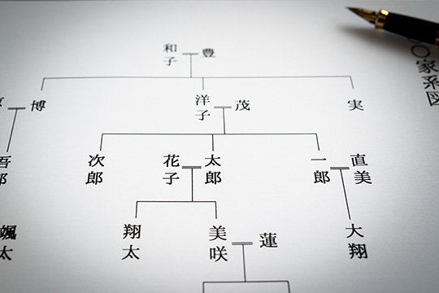
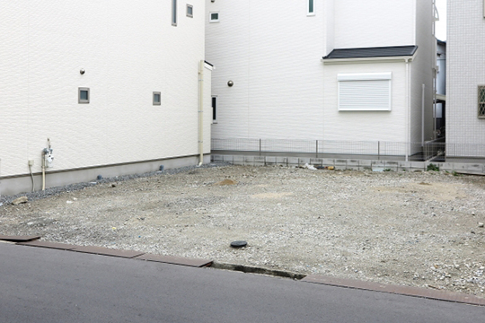

相続税申告

相続税申告は専門家を頼るべき
相続税は生前から対策をしておくことにより支払う税金は大きく変わってきますが、被相続人が亡くなったあとの遺産分割によっても税金の額は大きく変わることがあります。相続税というと、多くの方が一生の内に１・２回しか関わることがない事なので、一般的に十分な知識を備えている方は多くありません。そんな一般の方が専門家に頼らず相続税申告をするのはかなり時間を要する上にとても難しいことです。また、申告内容に不備があると税務調査を受けることとなります。
税務調査を受ける可能性があることや、専門的な知識、節税のノウハウなどを考えると、税の専門家である税理士に相談することがベストです。
-
01
- 遺産の分割で節税
-
相続が発生すると相続人間で誰がどの資産を引き継ぐかを決める「遺産分割協議」を行う必要があります。この遺産分割の仕方で、相続税が高くなったり安くなったりします。
つまり、残された財産において「誰が引き継ぐか」「どのような状態で引き継ぐか」「次の相続を想定しているか」などで相続税額が変わるのです。なかでも小規模宅地の特例や配偶者の税額軽減等を有効に活用する事で節税に繋げることができます。
 -
02
- 土地評価による節税
-
遺産の中でも財産価値が高く、遺産総額のかなりの割合を占めるものが自宅などの不動産、なかでも土地です。したがって、この土地を幾らで評価するかによって相続税額も大きく変わってきます。
土地評価には豊富な知識と経験が必要となります。当事務所の土地評価は、原則として現地調査だけでなく役所調査まで実施した上で、専門家の視点から算出します。
なかでも、小規模宅地の特例を使うことは、土地に対する節税の中でも重要のものです。小規模宅地の特例の要件を知ったうえで、遺産分割をしたり期限まで土地の使い方を決めることで大きく相続税額が変わります。
 -
03
- 二次相続を考慮した相続
-
父親が死亡したときの相続を行った後に母親が死亡し、子供だけで行われる相続が二次相続です。配偶者が故人から相続した財産も、いずれは次の代に相続されることになります。多くの人がこの一次相続と二次相続の両方を経験しなくてはいけないことになります。
そして相続税が発生する場合、この二次相続を考えて遺産分割をしないと、一次相続と二次相続の合計で納める相続税が高くなってしまうことがあります。そのため、一次相続から遺産分割を検討して節税を考えることが重要になります。当事務所では、二次相続を加味したトータルでの節税となるような助言をさせていただきます。
-
04
- 書面添付による税務調査対策
-
当事務所では、税理士の責任のもとで作成する「書面添付」を徹底し、税務調査に対する対策を行っております。
書面添付制度とは、税理士法第33条の2の規定に基づき、相続税申告書の提出に際し、必要事項を具体的に記載した書面が添付してあれば、税務調査を受けることになった場合でも、税理士に意見陳述の機会が与えられる制度で、意見聴取で疑問点が解消できた場合には、実地調査が省略されるという利点があります。また、書面添付制度を利用することで税務調査が入る可能性自体も減ると言われています。よって相続人の精神的な負担をかなり軽減することができる制度です。
この書面添付は、税理士なら誰でも簡単に作成できるものではなく、書面の書き方のノウハウと十分な経験がないと作成は難しいです。また現在では、万一書面に記載した内容と実際の内容が異なる場合、税理士が懲罰を受ける可能性があることから、まだ多くの税理士が書面添付制度を活用できていない現状があります。その点当事務所では、相続税に強い税理士事務所を掲げておりますので、税務署に信用される書面添付作成が可能です。
以上が当事務所で行っている申告時の対策の一部ですが、上記以外にもまだ多くの対策は存在します。
お客様一人ひとりにできる対策は異なりますので、より詳しい申告対策について知りたい方はお気軽にご相談ください。
申告手続きには期限がある 申告手続きの流れ